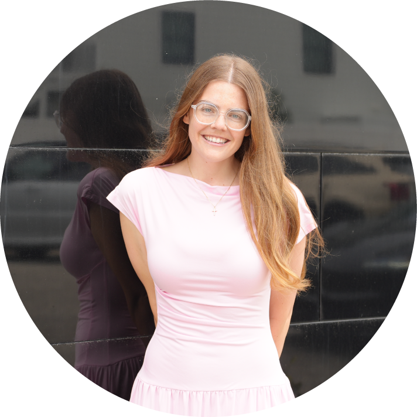
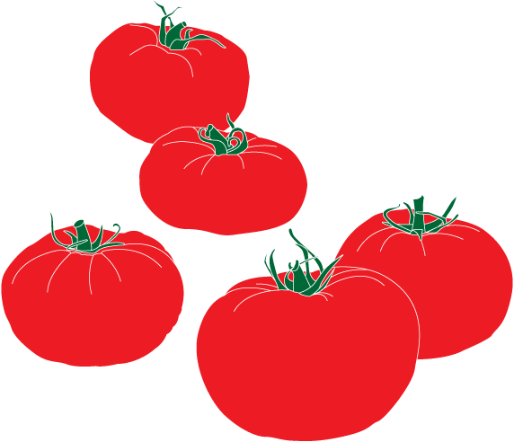

Graphic Designer & Digital Marketer
cultivating creative growth
Creative professional with a track record in brand development, product design, and operations management. Experienced in leading cross-functional teams, launching community-driven organizations, and delivering cohesive visual identities across print and digital channels.
Explore Selected Works

a cultivated approach
I’m a graphic designer and creative director who’s spent years building brands from the ground up — from launching a community-driven nonprofit to leading creative teams at consumer brands. My work sits between visual identity and marketing performance: I design the look, then make sure it actually works. From founding a nonprofit structured on the golden ratio to leading product design for national retail, I’ve built brands where every detail serves something beyond itself. I bring the same care to a 16oz mug dieline as I do to a children’s animation.
Visual Precision
Specializing in print-ready layouts, creative packaging, vector typography, and branding identities with flawless structural composition.
Paid Media Strategy
Designing high-converting graphics for paid social campaigns across Facebook, Instagram, and LinkedIn. Setting target metrics and running conversion-driven models.
selected works


core competencies
Adobe Creative Suite
Digital Marketing
Content & Strategy
Execution & Strategy

Constant Cultivation
Expanding my digital skillset every season to drive brand conversions.
let's grow together
Ready to start a creative project?
Currently open to graphic design, digital marketing, and agency roles — on-site, hybrid, or remote.
alyssamspear@gmail.com
Professional Track
Review my detailed experience across graphic design platforms, ad tracking, and client growth campaigns.
Download My Resume